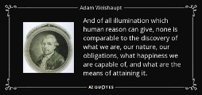
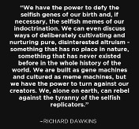
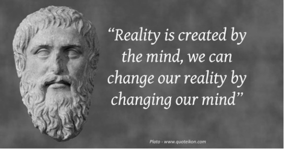
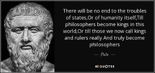

What Hinders Us from Creating a Modern Eden? Can we overcome it?
Jean Jaquez Rousseau believed man was first in the wild singularly before learning he was safer in groups. He illustrates in his paper, The Social Contract, the first men would have lived most of our lives in solitude and rarely would have encountered other humans. Due to this it was natural for us to consider ourselves and only ourselves. It was not until it benefited our individual survival that humans would consider socializing and serving the needs of others.
The first step of social reason would have been something like “hey if you watch my back from predators while I sleep, I’ll watch yours when you sleep” or, as Rousseau suggested, women negotiated with men to hang around longer in order to protect them while they were pregnant and while their children were hyper vulnerable as infants. Arguabily, this was the first contract of mutual trust and foregoing competition for food, territory, and resources in exchange for collaboration between humans.
Rousseau explains it likely wasn’t too long after that we began to create communities of shared child rearing, allocated hunting duties, and were able to farm for food. Continuing down this path eventually led to the first cities, then countries, and inevitably to the various complex societies we experience today.
I think we can all agree we’re no longer in fear from predators because of this. Our social contracts have thankfully led to far greater sense of security and safety than our ancestors could have imagined; however, we are still influenced by our evolution and continue to engage in the same selfish decision-making process we began with.
Richard Dawkins theory in the “Selfish Gene” is that natural selection doesn’t just select the most fit or most adaptable being as Darwin proved, but consequently, and similarly to Rousseau, the most selfish. Dawkins argues that focusing on itself and its needs first, the self ensures its greatest chances of meeting its conditions for survival. Because they are more likely to meet these conditions, the selfish are more likely to survive, and therefore more selfish than selfless beings continue to pass this trait down.
It's only natural then, even within our safe and complex societies, that we continue to feel this innate selfish need to protect ourselves, competing for the resources we know are finite (at least in our lifespan). It’s engrained in our biology, persistently pulling at us to play the game we know as “the survival of the fittest”.
Unfortunately, when we choose to play this game, we prioritize ourselves, often sacrifice others needs for our own inconsiderate of the bigger picture. In the confines of social constructs, we exploit one another, compete for wealth, steal, occasionally wage war, and other irresponsible actions; anything to be or feel like the better surviving and more fit human.
In the United States, a capitalist nation and where the health of the economy comes first, we achieve a more favorable outcome for our business and ourselves if we maximize the profit or monetary benefit of our decisions. By making decisions for profit, rather than altruistically, a business can typically ensure its survival. These decisions often do not demand we consider the long-term effects to others whom share the same resources.
We know from scientific evidence that human agency has had a negative impact our planet’s vital signs. The current climate crisis, brought on by greedy overconsumption, is a perfect example of this short sighted self-first nature. In our near-sightedness we continue defforresation of the Amazon Rain Forrest, increasingly rely on fossil fuels, and eat a primarily meat diet regardless of the fact we historically had primarily nut, fruit, and crop diets.
We have the luxury, brought on by societies sense of security and safety, to fill our wildest desires while ignoring the harmful effects we have on ecosystems of life. Ultimately, it's this selfish pattern which arises from evolutionary design that has nearly ensured our own destruction and hinders us from creating a Modern-Day Garden of Eden.

I think we can all agree the current path is not a viable solution if any of us wishes to survive. Instead, we need to understand ways in which human agency can have a positive impact on our planets vitals. We must learn to pause, resist our selfish biology, and consider what we are truly capable of before it is too late. We must come to perceive the collectives improved survival and a plentiful planet also increases our own chances of survival.
There are many things we must do to overcome this. Firstly, the capitalist mentality that catalyzes survival of the most profitable, must, and can, find room to consider existential and altruistic issues. Thankfully, it puts the power in the hands of the consumer, creating space for consumers who are willing to purchase altruistically and for investors willing to reevaluate what it means to be the fittest company.
If we want our economy to be carbon neutral, we need to do three things.
Invest in and purchase only from business’ that are already or are progressing towards carbon neutrality. Those that recycle, produce environmentally friendly products, and who’s offerings are necessary more so than desirable. By purchasing from these companies, we choose not to give our money to business’ who operate in another way. We force entire industries and segments of our economy, in order to gain our coin, to evolve to our green needs. And if they chose not to, without revenue they will fail to survive and cease to harm our planet.
Secondly, if we want our economy to limit the resources we use, we could consider limiting our consumption. By purchasing less as individuals, we decrease our demand for products. In the grand scheme of things, decreased demand means decreased supply (output) which necessitates less (input) resources.
Lastly, if we truly desire to manifest a more plentiful earth, we can donate our wealth to non-profits and organizations that are devoted to clean energy technology, restoring fertility in the soil, planting greenery, and reviving healthy populations of wildlife. If we're short on money, we can write our local representatives to encourage government programs that benefit these organizations.
Ultimately, to change our reality all we need to do is change our mindset.
Thousands of years ago it was written in the Bible,
“Be fruitful and multiply and fill the earth and subdue it; and have dominion over the fish of the sea and over the birds of the air and over every living thing that moves upon the earth” [Genesis 1:26-28.]
We’ve allowed this mentality to influence Western human behavior for thousands of years. We’ve selfishly assumed dominion gives us the right to dominate like a dictator. To rule over the fish of the sea, the birds of the air, and every living thing that moves upon the earth in the way we see fit and pleases our desires.
It's time we viewed this in a healthier way. Rather than have “dominion” over all living things, we can rule more like a philosopher. As Merriam-Webster defines it, “one who studies the fundamental nature of knowledge, reality, and existence”; an expert on making more responsible decisions for all of reality and existence that moves upon the earth. In a sense, we can identify as stewards of this planet; something civilizations of the past have already achieved before us.
If we can do this we’re capable of overcoming our selfish nature and enabling a greater degree of well-being for all. We can leave this planet more pletiful than we found it. In a nutshell, we’re capable of overcoming our hinderance and we're capable of creating A Modern Day Eden.